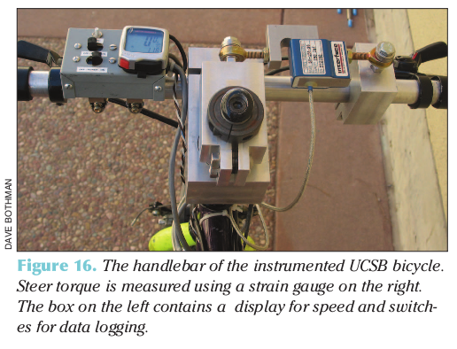
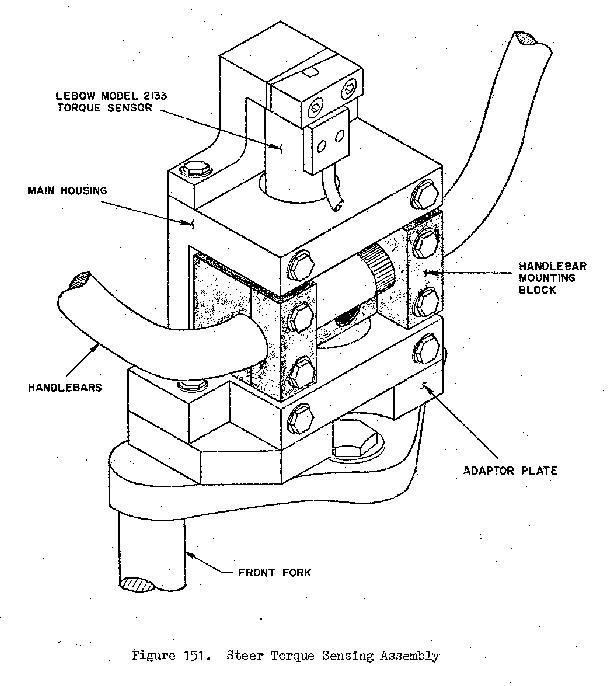

Davis Instrumented Bicycle¶
Warning
This document is a draft which is updated regularly (Last updated January 30, 2012 at 22:16:50 PST). Once I submit if for my doctoral degree at UC Davis, it will be done. So for now use at your own risk. The information may or may not be correct. Reviews, comments and suggestions are welcome.
Preface¶
At the beginning of 2009 I was in Delft working with Jodi and Arend on much of the work explained in the previous Chapters. I was still also in contact with Mont and Luke back in Davis. Before I’d come to Delft, Luke had mentioned the possibilities of applying for an NSF grant to fund the remainder of our bicycle dynamics projects. This was enticing, as Mont doesn’t have much of a track record of getting any grant funding for his lab, preferring to work spend more time on research of less expensive endeavours. Also, we’d spent the first few years taking teaching assistance positions which ate up most of our available research time outside of classes. I fortunately got the Fulbright grant which gave me a year’s stipend so that I could focus on research and Jodi’s PhD budget helped fund the practical research costs in Delft and some of my conference trips. At the beginning of December 2008 Luke sent me an email with a renewed interest in applying for the NSF grant and Mont seemed to be on board. Mont also talked with Ron and got him interested. We spent the next two months writing our grant proposal primarily using video conferencing and collaborative word processing to get it done. The basic idea was to pair Ron’s manual control expertise with our bicycle dynamics expertise to study the dynamics, control and handling qualities of bicycles with the theoretical constructs supported by extensive experimentation. Our work paid off and we received the grant, albeit at a smaller amount than asked for so we had to cut back some of the scope (which Arend correctly forecast of being too large!). This set us up for a two year study where we’d develop a manual control model, verify it and the basic bicycle dynamics with an instrumented bicycle and a robotic bicycle and finally do some work on handling qualities predictions.
When I got back to Davis in September 2009 we started gearing up for the grant work that would start come October 1st. I had to get my qualifying exam done in October and I also signed up for a Spanish class (which wasn’t necessarily a good idea for the grant’s sake). Luke also took some programming classes and this gave us a really slow start, as neither Luke or I realized that the scope of what we had to do didn’t really allow any more time for classes. We got moving though and started to plan out the bicycle(s) we were going to build. Our proposal called for two bicycles, but somehow Luke and I hatched a plan to build a single multi-purpose bicycle to “save money”. Arend sent Danique over in January 2010 to do her internship with us. She was super bright and really started to make some progress on the custom data acquisition system we’d planned. We’d decided to go fairly low level and use an Arduino paired with several digital sensors. During this time, Luke and I had our roughest moments working together which was mostly rooted in my frustrations with the progress of this bicycle design. I’d already built a bicycle with Jodi that did almost everything I needed and I felt like I was reinventing the wheel. Things eventually broke down after the stress boiled to the top and we sat down with Mont to figure out how to solve things. The conclusion was to split the bicycle’s back up and each of us move forward more independently. I think this was the absolutely right move for me in terms of getting the project done as I’d planned and the stress immediately went away. But the part I’m bothered about is that I wasn’t able to work in a direct team with Luke when the pressure to get things done was high. I know that if we work together, the final product would be many times greater than our independent work because we have several complimenting skill sets, but conflicting visions of the final product and the path to get there really put a wall between us. I’m continually learning how to do teamwork and probably always will be. I doubt it is one of my strong points, as I always want to be in control. I hope that I can develop strong team environments for my students in the future too.
Nevertheless, the instrumented bicycle moved forward. I was awarded an extra grant to cover my stipend for the summer of 2010 and we used the grant money that would have cover me to hire Gilbert, a new student in our lab, to help us out for the summer. Between me, Gilbert and our undergraduate interns Mohammed, Stephen, Eric, and Chet we plowed through the bicycle construction through the summer to hopefully be back on schedule for experimentation in the fall. It ended up taking me all fall quarter and some into the new year to get the bicycle in a working state. This chapter details all that went into its design and operation.
Introduction¶
This chapter details the design and implementation of an instrumented bicycle capable of accurately measuring much of the necessary kinematics and kinetics associated with controlling the bicycle.
I had considered using motion capture for the kinematics as we had very successful results measuring the complete kinematic configuration of the bicycle and rider with motion capture techniques, but I no longer had access to a system as good as the one at the Vrije Universiteit. The systems available were could capture the motion on the treadmill but were not especially not suited to capture the motion of the bicycle on the ground. With this in mind, we decided to expand the on board measurement techniques used in the Delft Instrumented bicycle. The primary downside was inaccurate location tracking of the system. Being that this wouldn’t be detrimental to system identification, we moved forward.
The bicycle’s primary design criteria were as follows:
Sized for average adult males which were our intended riders.
Accurately measure the rider’s applied steering torque.
Accurately measure the fundamental kinematics of the bicycle:
- Three dimensional rates and orientations of the bicycle frame and fork.
- Rear wheel rotational rate relative to the bicycle frame.
- Restrict the rider’s biomechanical movement to more closely meet the Whipple
model rigid rider assumption. This in turn also requires the bicycle to be self propelled so that the rider does not have to move their legs.
- Accurately apply and measure a lateral disturbance force to the bicycle
frame.
From early on, I intended to attempt some experiments with some constrained rider biomechanical motion, such as leaning. The design for this led to secondary design criteria as the project progessed and were never fully implemented, but I’ll discuss them for completeness. They are as follows:
- Restrict the rider’s body motion to a limited set and measure the additional
kinematics.
- Hip roll, torso relative to hip lean, torso relative to hip twist, and
lateral knee motions.
Measure the additional reaction forces between the rider and bicycle.
- Forces and moments in the seatpost and forces at the foot pegs.
Bicycle¶
Our original requirements for a bicycle were as follows:
- Steel frame for easy modification and welding.
- Disc brake mounts for speed encoders.
- 100mm front dropout spacing and 135mm rear dropout spacing.
- 1-1/8 threadless headset to allow for easy modification.
- Round tubes for head, down, top, and seat tube (i.e. nothing non standard)
- Ideally a horizontal top tube for equipment mounting purposes.
- Threaded rack mount for instrumentation mounting.
- Accept 700c tires so that we can use high pressure.
- Size: 54-58cm for our intended riders.
We chose a large size Surly 1x1 model. It is designed as a single speed off road bicycle for 26” wheels with fat tires, but can be setup with 700c higher pressure tires. The frame is constructed from butted 4130 CroMoly steel tubing. It has both front and rear V-brake in addition to disc brake mounts. Otherwise it met all of our requirements. We purchased some standard components including 700c aluminum wheels with 23c Continental Gatorskin high pressure tires and basic handlebars and brakes.
{kind=link}
figSurly
To allow the bicycle to be propelled forward without requiring the rider to pedal, we opted for a bicycle electric hub motor kit. http://www.ampedbikes.comAmpedBikes donated both a direct drive and geared kit for our use. I used the direct drive version on the instrumented bicycle. The kits come with heavy 36v lead acid batteries so we purchased a light, ~2.75 kg, 36 volt lithium ion battery as a substitute to help decrease the over bicycle weight. The kit comes with a motor controller with a rudimentary “cruise control”. We needed some form of cruise control to allow the rider to set the speed during the experiment and then focus their attention to lateral control as opposed to throttle control. The Amped Bike cruise control worked well for the experiments performed on the floor, but was more difficult to match the cruise control to the speed of the treadmill. Some sort of feedback control would alleviate the difficulties, but we made due. The exposed wires from the hub motor are also easily susceptible to damage. The bicycle fell over once, damaged the wires and shorted the hall effects sensors in the hub. I spent a couple of weeks repairing it [1].
Orientations, Rates and Accelerations¶
The Whipple bicycle model at constant speed fundamentally has two important states that describe the lateral dynamics: roll and steer (as defined in Chapter Bicycle Equations Of Motion). Ideally one would like to measure the angular orientation, angular rate and angular accelerations of both the rear frame and the front frame. Sensors that allow independent and accurate measurements of each are ideal, to avoid having to estimate measurements through differentiation, integration or state estimators.
The steer angle is easy to measure with either some form of potentiometer or encoder and has been accurately measured on many bicycle and motorcycle systems. The same goes for the yaw, roll, pitch and steer rates, which are typically measured directly with rate gyros. The angular accelerations aren’t directly measurable, but after-the-fact numerical differentiation with filtering is often acceptable. The angular accelerations can also be computed if the acceleration and location of two points are measured with accelerometers.
| Measurement | Range | Accuracy | Bandwidth |
|---|---|---|---|
| Roll Angle | \(\pm 8\) deg | 0.2 deg | 45 hz |
| Roll Rate | \(\pm 30\) deg/s | 0.6 deg/s | 40 hz |
| Roll Acceleration | \(\pm 100 \frac{\textrm{deg}}{\textrm{s}}\) | \(2 \frac{\textrm{deg}}{\textrm{s}}\) | 25 hz |
| Steer Angle | \(\pm 65\) deg | 1 deg | 45 hz |
| Steer Rate | \(\pm 150\) deg | 1.5 deg/s | 35 hz |
| Steer Acceleration | \(\pm 600 \frac{\textrm{deg}}{\textrm{s}}\) | \(12 \frac{\textrm{deg}}{\textrm{s}}\) | 30 hz |
The roll angle is the most tricky measurement. Integration of the roll rate measurement is an option, but definite initial conditions and some way to account for the signal drift is required, and not trivial. Distance lasers have been used to directly measure the roll angle with respect to the ground but are particularly expensive [Everste2009]. [Boniolo2009], [Boniolo2008] develop a simple algorithm to remove the low frequency drift and only require yaw rate, roll rate and speed measurements to get peak roll estimation errors of 5 degrees. The roll angle can also be estimated with a state estimator such as a Kalman filter ([Gustafsson2002], [Teerhuis2010]). The plant in the Kalman filter can be general 3D motion of a rigid body or a model of some order and complexity of the bicycle. Constraining the estimation with the use of a bicycle model as the plant could have drawbacks when using the resulting angle for model validation but can give potentially great results otherwise. These types of algorithms are implemented in many sensor packages.
Todo
find other’s that measured roll angle
There is a class of sensors called Inertial Measurement Units (IMU) or Attitude heading reference systems (AHRS) have become more affordable and small enough to be very appropriate for orientation and rate estimation due to the advent of MEMs rate gyros and accelerometers. An IMU can potentially be rigidly affixed to each body of the system to give complete kinematic details of the motion.
- Inertial Measurement Units
- An inertial measurement unit typically measures the body fixed the angular rate of a rigid body and the acceleration of a single point.
- Attitude Heading Reference System
- An attitude heading reference system measures what an IMU does but also often includes earth magnetic field measurements and or GPS combined with an estimation algorithm to provide orientation and/or location estimations along with the other measurements.
Many of these were in our budget range so we scouted various companies (MemSense, Navionex, MotionNode, MicroPilot, Crossbow, VectorNav, Ch Robotics, ..) to see what was offered [2].
We ended up choosing the VN-100 development board from a relatively new company called VectorNav due to price, on board orientation calculations and the potential ease of collecting data via a typical RS-232 serial interface. Both Matlab and Python have good serial interface packages. We placed a single VN-100 on the bicycle frame to measure the angular orientations and rates along with the acceleration of a point on the frame. The VN-100 relied on additional magnetometer readings and an on-board proprietary algorithm with a Kalman filter for computing the real time orientation about the three axes.
Since the front frame is attached to the rear frame via a revolute joint a single additional rate measurement is needed to measure the motion. I went with a similar design and setup as the Delft instrumented bicycle: a potentiometer for relative steering angle measurement and a single axis rate gyro for the body fixed angular rate of the front frame about the steer axis.
| Measurements | Range | Accuracy | Sensor |
| Yaw Angle, Roll Angle, Pitch Angle | \(\pm180\) degrees, \(\pm180\) degrees, \(\pm180\) degrees | < 2 degress, < 0.5 degrees, < 0.5 degrees (3 sigma)* | VN-100 |
| Yaw Rate, Roll Rate, Pitch Rate | \(\pm500\) deg/s, \(\pm500\) deg/s, \(\pm500\) deg/s | \(<\pm0.06\) deg/s (bias stability)* | VN-100 (Invensense IDG500 and ISZ500) |
| Rear frame 3D point acceleration | \(\pm2\) g | x/y :math`<2` mg, z \(<3\) mg (bias stability) | VN-100 (Analog Devices ADXL325) |
| Front frame fixed angular rate about the steer axis | \(\pm200\) deg/s | Single axis rate gyro (Silicon Sensing CRS03-04) | |
| Steer Angle | Rotary potentiometer (SP22F) | ||
| Rear wheel rate |
- Accuracies reported with respect to the calibrated and filtered output.
Todo
- rate gyro was super expensive for little gain
- i couldn’t ingtegrate the vn-100 into the rest of the DAQ
- VN-100 sucked at giving orientation
Wheel Rate¶
I measured the rear wheel speed in the same fashion as the Delft bicycle. We mounted a small DC permanent magnet motor (Globe Motors E-2120 without the encoder) to the rear frame in much the same way as a simple generator for a bicycle light works. A small knurled aluminum disc on the motor shaft engaged the sidewall of the tire. The voltage of DC motors is linearly proportional to the angular speed of the wheel. The disc diameter was chosen such that the top speed of the bicycle would give the maximum measurable output of 10 volts.
Todo
find which runs the speedometer was mounted differently
figSpeedometer
Steer Angle¶
I adopted the same steering angle measurement device that I use on the Delft instrumented bicycle, with some minor improvements such as better tension adjustablity and switching to a screw mount potentiometer.
Todo
add the
The VN-100 turned out to be a poor choice for our application in mutliple ways. The second of which I’ll talk about in a later section. The first is that the orientation estimations were very poor. I wanted at least accurate estimate of the roll angle of the bicycle. The VN-100 repdeatly did not provide this. VectorNav worked with me and tried offer various methods of tuning the VN-100 with state covariance weightings for the Kalman filter and also to tune out any static magenetic fields from the bicycle frame. The highly likely issues were associated with both the wheel rotationing and teh front frame rotation all relative to the rear frame, with could cause varying distrubances in the magnetic field. The hub motor definitely affecting the magnetometer readings and these may have been too great to tune out. I also realized that going with a proprietary estimator is a bad idead, especially when one has a good idea of the dynamics of the rigid body that the sensor is attached to. In our case if the Kalman filter was programmable, we could taylor it with the a bicycle model to improve the orientaion estimation significantly. Also if the VN-100 could accept input signals, the filter could be tuned well too. After countless hours trying to tune their proprietary filter I gave and went to the roll angle measurement design that I should have done in the beginning.
Todo
cite jackson1998 for steer angle
Roll angle trailer¶
I designed a simple trailer to that was pulled behind the bicycle to measure roll angle with a potentiometer, much in the way the steer angle was measured. The trailer needed to be light such that it didn’t adversly affect the lateral dynamics and to give a good estimate of the roll angle. The trailer had two caster polyurethane wheels (roller blade wheels) attached to a frame which attached via a revolute joint aligned with the roll axis to a yoke that attached at the axle of the rear wheel.
Todo
Make nice figure or photo of the trailer.
figTrailerAngle
Todo
Put in the correct values for the roll angle trailer.
Todo
cite Boniolo for roll angle estimation, talk about Danique’s work, cite other people that handle this problem too.
Lateral Force¶
I got the idea of for lateral force perturbations from some of my first email exchanges with Arend and when I was in Delft we did several experiments with lateral perturbations, but the main probably was that we didn’t measure it. We weren’t able to come up with a clever way of perturbing the system with a harmoinic input [3], so I simply attached a 100 lb force load cell (Interface SSM-100) inline with a rope attached to the underside of the bicycle seat. This worked for the first round of experiments, but only provided a negative lateral force as it could only be pulled. Ideally, the rider shouldn’t know when or which direction (or magnitude?) of the disturbance. We solved these by attaching the load cell inline with a push/pull stick which was attached to the seat via a ball joint. The rider wore a helmet with a blinder on the side of the lateral force stick so that they could see the movements of the stick or the person operating the stick. Finally, on the treadmill we wrote a simple program which randomly instructed the stick operator when and which direction to applied the force. During the floor runs, we retained the blinder and instructed the operator with a series of random push/pull sequences. The operator applied as many perturbations as possible on the length of the track.
Todo
add picture of ball joint attachement under the seat
Todo
Example perturbation measurment.
Todo
Calibration of lateral force
Seat Post¶
I had intended to measure the forces at all of the points of interaction of the rider and bicycle with the seat being a primary location. Cal Stone [Stone1990] developed a seat post which was capable of measuring five components of force in the seat post shaft with an array of strain gauges. It was not capable of measuring the torque about the seat axis and I had intended to add the strain bridge to measure the sixth component. The seatpost was instrumented by simply gluing strain gage bridges onto a stock seatpost. Due to this the accuracy of the measurements was probably not high.
Foot Pegs¶
We designed a set of foot pegs which were capable of measuring the downward force applied at the interface of the human’s feet. Each foot peg was fit with two strain gage bridges.
Strain Gauge Amplification¶
All of the load cells required analog amplification of the bridge signals to bring them up to a level measurable by the NI USB-6218 which had a maximum range of \(\pm 10\) volts. I purchased the Futek CSG-110 strain amplifier for the torque sensor and had the sensor factory calibrated in tandem with the amplifier. Cal Stone [Stone1990] had developed a custom amplifier for the seatpost and handlebars which could amplify up to 14 bridge signals. Being that I was intending to make use of the seat post already, the amplifier box was used for the remaining strain gage amplification. I didn’t ever hook up the seat post and foot pegs, so the amplifier was only used to for the lateral force load cell. I used 16.5k resistors for the first stage analog amplifier.
Calibration¶
All of the analog sensors I used require some sort of calibration that develops a relationship between the measured voltage from the sensor and the physical phenomena that is being measured. I self calibrated some sensors, had one calibrated at the factory and used the reported manufacturer specifications for others.
Potentionmeters¶
I calibrated the steer angle sensor by inserting a custom protractor into the steer tube of the fork and measuring the voltage of the potentiometer output at a series of distinct angles. This calibration was done anytime the timing belt or pulleys were disegaged.
Todo
image of the protractor
The roll angle potentiometer was calibrated by measuring the bicycle frame’s absolute roll angle with a digital level and recording the voltage output for a sweep of angles.
For both cases potentiometer’s output voltage is ratiometric with respect to the supply voltage \(V_s\) and the potentiometer angle can be computed given the average calibration supply voltage \(V_c\) and the slope and intercept of the calibration curve relating voltage to angle the angle. Depending on the calibration the angle could be the rotation angle of the potentiometer as in the case of the roll angle measurement or the actual steer angle in the case of the steer angle due to the gearing from the steer tube [4].
Rate Gyros and Accelerometers¶
The analog accelerometers and rate gyros typically have specifications for the sensitivity and the zero bias, where both are ratiometric (i.e. scale with respect to the supply voltage). The sensitivty gives the linear relationship of the output voltage for a given acceleration or rate. The zero bias is the output voltage of the sensor for zero acceleration or rate for a given supply voltage.
Todo
These only seem to ratiometric in the bias (i.e. the slope doesn’t change with respect to supply voltage change. This needs to be checked better.
Wheel Rate¶
We measured rear wheel angular speed with the same technique used with the Delft instrumented bicycle. We mounted a small DC motor such that a knurled roller wheel attached to its shaft rolled against the rear tire. The voltage of of a DC motor has a linear relationship with the rotational speed of the motor. To generate a calibration curve, we used an AMETEK 1726 Digital Tachometer to measure the rotational speed in rpm and digital multimeter to measure the voltage for a sweep of motor rotational speeds.
| RPM | Voltage |
|---|---|
| 42.5 | 0.094 |
| 62.0 | 0.1385 |
| 89.0 | 0.199 |
| 132.0 | 0.291 |
| 185.0 | 0.406 |
| 271.5 | 0.595 |
| 391.0 | 0.857 |
| 569.0 | 1.252 |
| 855.0 | 1.879 |
| 1243.0 | 2.738 |
| 1785.0 | 3.91 |
| 2588.0 | 5.67 |
The relationship from motor rotational speed to voltage is \(mV+b\) with the slope and intercept of the rpm to voltage curve determined by regression is \(m=456.3862\frac{\textrm{rpm}}{\textrm{volt}}\)\) and \(b=-1.2846\textrm{ rpm}\)\). We then attached a small disc to the motor shaft such that the disc rubs against the rotating tire. The disc diameter was chosen such that the motor would ouput 0 to 10 volts for a bicycle forward speed range of about 0 to 30 mph. The rotational speed of the rear wheel as a function of voltage can be written as a linear realtionship
where \(r_d\) is the radius of the generator disc and \(r_c\) is distance from the rear wheel center to the disc/tire contact point and \(s_f=\frac{2\pi}{60}\) is a scaling factor from rpm to radians per second. \(r_d=0.028985\) m and \(r_c=0.333375\) m when the generator was first attached (runs 0 to XX) and \(r_c=0.3199511\) m after the generator was remounted (runs XX to XX). The relationship between the rear wheel rate as a function of voltage can more generally be rewritten as
Todo
find which runs the speedometer was mounted differently
where \(m_R=\frac{s_fmr_d}{r_c}\) and \(b_R=\frac{s_fbr_d}{r_c}\). The nominal forward speed of the bicycle can also be computed
Lateral Force¶
The lateral force was calibrated by applying a series of compressive and tensile loads to the load cell and measuring the amplified voltage output. Before calibrations, the amplifier offset voltage potentiometer was set to about 2.5 v and the nulling potentiometer adjusted so that the voltage was zero for the no load case.
Steer Torque¶
The steer torque sensor was calibrated at the factory in tandem with the amplifier and Futek supplies a certifeid calibration document with the calibration data. The CSG-110 amplifier supplies constant 10 vdc to excite the strain gauge brigde. I did not measure this voltage because the maximum voltage for the NI USB-6218 is 10 V, so no ratiometric scaling was used. As long as the battery supplied 12+ V to the CSG-110, this would not be an issue.
Todo
include a link to a copy of the calibration sheet
Software¶
I wrote a simple program that collects the data for the self calibrations and generates a generic calibration file for the various sensors. The data for the manufacturer supplied calibration data was manually entered to create similar files. These files are parsed to build the database described XXX.
Rider Harnesses¶
The bicycle was designed to accomodate free rider biomechanical modtion and a subset of motions.
Rigid¶
The harness was constructed such that the rider was rigidified as much as possible with respect to the rear frame. A medical back brace was used to rigidify the spine and hip motion. I then attached the brace to the bicycle frame via a stout adjustable arm. Finally, I fashioned some knee straps with hard drive magnets and a attachment plate on the frame so that the rider’s legs would be rigid with respect to the rear frame. The magnets were weak enough that the rider could remove his legs in an emergency. This left the rider’s arms and head free to move. The arm motion was required for controlling the bicycle, although one could imagine fixing the rider’s arms and only allowing control with motion of their hands. The head probably should have been rigidified with respect to the body cast, but we didn’t. Jan had great plans for a halo like ring with nails sticking through to the rider’s scalp so that they couldn’t move their head without excrutiating pain, we just never got around to making it.
Restricted¶
A second harness was partially developed to restrict the rider’s motion to that described in Bicycle Equations Of Motion. A back brace which left the hips free to move was used to keep the spine straight and a custom molded hip braced was developed to hold securely to the hip bone. The hip brace would then be attached via a revolute in the roll direction to allow the hips to roll about the seat. The back brace would then be attached to the hip brace via a join which would allow upper body lean with respect to the hips.
Data acquisition¶
Both the VectorNav VN-100 and the NI USB-6218 were connected to a small ASUS EEEPC netbook which was mounted on the rear rack of the bicycle. The devices were controlled and the data logged using Matlab. I interacted with the VN-100 with Matlab’s Serial I/O toolbox and the NI USB-6218 with the Data Aquisition Toolbox. A custom program written withing Matlab’s Graphical User Interface framework was designed to allow the user to set metadata before each run, arm the system and view the raw data signals after the run.
- Automatically increments run numbers
- Set metadata: rider, environment, speed, manuever, notes
- Initializes the system
- View raw data time history traces
- Load previous runs, view the time traces, edit the metadata and resave
- Save output as a mat
- Convert mat file to hdf5 format
figGUI
- nice if you could delete runs and only increment of the latest run (it may do this)
Due to the time synchronization issue we were limited to a single trigger setup, versus a multiple trigger for repeated runs. (i.e. we had to stop after every run to re-initialize the computer, versus allowing the rider to trigger a series of runs in a row without having to stop).
The source code for the software is available on Github, including some tools for initial post processing.
Time Synchronization¶
When we originally chose to use the VectorNav VN-100 and the NI USB-6218 with a netbook PC, we’d convinced ourselves that they would all work together seamlessly. The manufacturers of each device seemed to think so and their disconnected knowledge helped convince us. This turned out to be very wrong. The main issue, which seems to rear its head in data aquisition often, is time synchronization of all the hardware involved. A PC running a vanilla operating system is not capable of detailed time management of processes. This is certainly true of collecting serial data from two independent devices. My intention was to collect data from both the VN-100 and the USB-6218 simulataneously with the Matlab Serial I/O and Data aquisition toolboxes, hopefully triggering the initial collection of data from the two devices simulatenaously or by reading the VN-100 serial data through the USB-6218. The simultaneously triggering was hampering primarily by the VN-100’s asychrnoous data transfer and no apparent ways to either start it with a trigger or by recording some signal from it through the USB-6218. It may be possible to read serial data through the USB-6218, but I never was able to figure it out. It very well may have been missing the features to do so, or that Matlab didn’t have a robust enough interaction with the USB-6218 to do so. I struggled quite a bit with this unforseen issue and we started looking at solutions to measure the same event with both the VN-100 and the USB-6218 and to synchronize the signals afterwards. We would need to select a sensor which was also on the VN-100 and then excite the two sensors with the same event. Ideally this event would be a step input to both sensors. We tried rate gyros and accelerometers but couldn’t come up with an adequate event, until we mentioned the problem to Ron and he immediately suggested just riding over a bump! This was the ticket. We ended up attaching an additional three axis acceleromater to the VN-100 development board which would read the same vertical component of acceleration and constructing a bump for the bicycle to travel over at the being of each run. This provided us with two signals which could be syncrhonized in time.
Bump¶
The accelerometers had a \(\pm 3\) g range, so we needed a bump which would provide veritcal accelerations within that range for speeds from 1 to 7 m/s. For a sinusodial shaped bump, the vertical accelration for a given speed can easily be computed. The height of a bump as a function of time is
where the maximum bump height is \(h\), \(v\) is the forward speed and \(L\) is the length of the bump. The acceleration
Being that the cosine varies from -1 to 1, the maximum acceleration due to the bump and acceleration due to gravity is
The maximum height of of a 1 meter long bump and forward speed of 7 m/s to give a 3 g acceleration is
I fashioned a very low sinusoidal bump from would that we laid on the track on the floor at teh beginning of the track and also launched under the bicycle on the treadmill. The bump lauching is somewhat amusing and we had to construct a “bump catcher” so that the bump didn’t fly off the back of the treadmill and hurt anyone or anything.
Todo
photo of the bump design and bump catcher, maybe the video
Signal Synchronization¶
The bump provides the event and the acceleration output of the tandem accelerometers logs the event. The time shift between the two signals can be computed by minimizing the least squares with respect to on signal minus the other signal which has been interpolated at the sample times of the first signal.
This plot shows the accelerometer signals collected by both the NI USB-6218 and the VN-100 for a typical run. The spikes in acceleration are due to the bicycle traversing the bump. The NI signal starts about a third of a second before the VN signal.
The basic algoritm for computing the error between the two signals is:
- Shift the NI signal some time tau.
- Truncate both signals around the common data.
- Interpolate the NI signal at the VN time samples.
- Compute the sum of squares of the VN signal minus the interpolated NI signal.
Using this formulation, you can then minimize the error with respect to tau. The minimization requires a good guess, as the minimzing function has local minima. I use both the location of the max values in the signals and finding the mimimal value of the error as a function of a fixed number of tau values to get good guesses. See the source code for the gorey details.
This plot shows the same accelerometer signals shown in the previous figure after finding the optimal time shift.
The computed time shift is used to shift and truncate all of the signals.
Things to Fix¶
The steering universal joint needs keyways. Git rid of the VN-100 and replace with two rate gyros. Add some gearing to the roll angle measurement. Do away with the slip clutch.
Steer Torque¶
Steer torque has been shown to be the most effective input required to control a bicycle and the input that the human most likely uses to control a bicycle. For the bicycle-rider system as a whole, the steer torque effectively a state. Accurately measuring the applied steer torque can provide rich data with which to understand the bicycle dynamics and the validity of the underlying models. But steer torque is one of the more difficult variables to properly measure. The require steering torque for controlling a bicycle in normal manuevers is a relatively low magnitude. This small torque can be hidden by the other forces a rider may apply to the bicycle’s handlebars. Secondly, the small magnitude torque requires a well designed load cell and strain gague bridge to give accurate measurments.
[Weir1972] demonstrates that steer angle control input has poor gain and phase margin as compared to steer torque control input.
[Roland1972] differentiaties steer torque input from steer angle.
There are very few published studies that measure or attempt to measure steer torque on a bicycle or lightweight single track vehicle and these measurements typically do not match the results of the analytical models. There have been more attempts at measuring the steer torque on motorcycles.
Todo
go through articl database looking for more examples of steer torque stuff
Bicycle Experiments¶
- [Lorenzo1997]
- David de Lorenzo instrumeted a bike to measure pedal forces, handlebar forces, hub forces to measure the in-plane structural loads. He took the bike to the trails and had 7 riders do a downhill section. The hand reactions were measured with a handlerbar sensitive to x (pointing forward and parallel to the ground) and z (pointing upwards, perpendicular to the ground) axis forces on both the left and right sides of the handlebar. Net torque about any vector in the fork plane of symmetry can be calculated from these. Figure 3d shows a plot of steering torque with maximums around 7 Nm. The stem extension torque (representing the torque from pushin down and up on the handlebars) reaches 15 Nm. The calibration information leads me to believe that the crosstalk from the all of the forces and moments on the handlebars gives a very low accuracy for the reported torques, probably in the +/- 1 to 3 Nm range.
- [Jackson1998]
- They don’t measure steer torque but attempt predict the contributions to torque on the front frame based on orientation, rate and acceleration data taken while riding a bicycle with no-hands.
- [Cheng2003]
This is a report about a design project at UCSB to develop and implement a steer torque measurement device (same one shown the Åström paper). The experiments and measurements seem to be one of a kind for bicycles. They begin with doing some basic experiments by attaching a torque wrench to a bicycle and made left at right turns at speeds from 0 to 13 m/s (0 to 30mph). The torques were under 5 Nm except for the 13 m/s trial which read about 20 Nm. They designed a pretty nice compac torque measurement setup by mounting the handlebars on bearings and using a linear force transducer to connect the handlbars to the steer tube which reduced the effects of other moments and forces acting on the steer tube. The use of bearings and rodends may be questionable as there is bearing friction and slop. Furthermore, downward forces on the handlebars could possibly still be transmitted to the load cell. The design does allow one to choose the lever arm for the load cell, thus giving some choice to amplify the force signal. They set it up to measure from 0 to 84 Nm with a Model SM Series S-type load cell from Interface with a 670 Newton range. They used a transducer amplifier also for signal conditioning. There are several sections on calibration, with some description of the use of pulleys and cables to apply a torque to the handlebars. They measured the torque during two different manuever types: a sharp turn at various angles and steady turns on various diameter circles both at 10mph (4.5 meters/second). The rider maintained constant speed through visual feedback of a speedometer. He talks of very noisy measurements and filters the noise by some type of moving average. He does not identify an countersteering. He claims the rider turns the handle bars right to initiate a right turn, which counter to what model predict. There seems to be no counter-torque in the data for turns. For the sharp turns the highest reported torque is about 10 Nm, for the steady turning he reports the highest average torque as 1 Nm.
- [Astrom2005]
- Åström et al. talks briefly about the a steer torque measurement system constructed for the UCSB instrumented bicycle but with little extra information. They use a linear force transducer of some sort mounted on the handlebars.
- [Iuchi2006]
- They construct a bicycle with a steer motor and controller which treats the rider’s addtional input as additive instead of a disturbance. The rider’s steer torque contribution is estimated from the motor torque and the handlebar and motor moments of inertia. Little detail is given to properly assess the design, but measuring steer torque by motor current may be effective.
- [Cain2010]
- He designed a custom torque sensor that fit inside a bicycle steer tube. He mostly removed the crosstalk effects due to an axial load on the sensor, but the design is still susetible to bending moments on the steer tube. He also didn’t account for the dynamic inertial affects of the handlebar and fork/wheel which are above and below the sensor, but these are potentially zero for steady turns. His measured steer torques for steady turns never exceeded a magnitude of 2.4 n-m. He wasn’t able to predict steer torque well with his bicycel model and only points to the fact that the sensor was 90% oversized.
- [Ouden2011]
- Designs a steer torque sensor for a bicycle which has a range of about +/-7.5 n-m. He was accutely aware of crosstalk issues with respect to the other forces applied to the handlebars and tried to design accordingly, but found that his design was still very suseptible to handlebar loads. He modifies the device to eventually get more reliable readings. He doesn’t account for the inertial effects of the front frame.
Motorcycle Experiments¶
- [Dohring195X]
- Supposedly he measured steering torque, but I’ve yet to see that.
- [Fu1965]
- Measures steering torque in steady turns.
- [Weir1979a]
Weir et al. designed an instrumented motorcycle with a torque sensor. The range was +/- 70 Nm with 1% accuracy and >10 Hz dynamic range. The crosstalk due to the other moments on the steer were removed with by utilizing two thrust bearings. It included stops to prevent sensor overload protection and weighed 14 Newtons. They comment that the handlebars are significantly rigid for their purposes. It was a modular design set up for multiple motorcycles. They comment on the range being too large for small amplitude inputs used in steady turning and straight running and that more sensitivity would be needed to measure these accurately. Weir used this to measure steer torques for two motorcycles at various speeds (>10 m/s) for steady turning and lane change maneuvers. The steady turning produced torques in the range of -10 to 30 Nm and the lane change produced -20 to 55 Nm.
The steer torque measurement design from [Weir1979a]. The adaptor plate allowed one to attached the main housing to a varierty of motorcycle forks. The handlebar mounting block “floated” on a set of thrust bearings that resisted all forces applied to the handlebars except the the moment about the steer axis. The Lebow torque sensor resisted the moment about the steering axis to give a pure torque measurment.
- [Sugizaki1988]
- They measure steer torque on four motorcycles during high speed lane changes. No detail of the steering torque measurment system is shown but they show the trime traces of steer torque for some of the manuevers which vary between -20 and 20 Nm. The time traces have little visivle human remant or noise.
- [Taro2000]
- Measures steer torque, but I don’t have the paper.
- [Bortoluzzi2000]
- Same description of the transducer as Biral2003.
- [Biral2003]
Biral et al. designed a custom steer torque measurement system for a motorcycle using a cantilever beam. The handlebars were mounted on a bearing similar in idea to [Weir1979a] but the steering torque load is transmitted through a thin cantilever beam which engagaes the fork. This design seems that it could be susceptible to cross talk from the forces applied to the handlebars by the rider, as it relies on the bearing to take all of the non-steering torque loads. But they report experimental values for torque that match their model predictions very well. The measure torques from -20 to 20 Nm for a slalom maneuver at 40 m/s.

- [Capitani2006]
- They measure steer torque on a scooter during a lange change and turns to compare with their model. No detail is given on how steer torque is measured, so I can comment on the quality of the measurement but they report values of -15 to 40 n-m on a couple of graphs. This is extremely poor and I wouldn’t trust the data or the model.
- [Evertse20XX]
- He mounts 2 axis load cells on at the handlebar grips to measure the forces on the grip. This puts the sensor right at the human/machine interface thus negating the need to worry about the interial affects of the front frame. .. todo:: find his thesis and see what he measured
- [Teerhuis2010]
- Measured motorcycle steer torque.
Bicycle Models¶
- [Limebeer2006]
- Limebeer and Sharp show a graph of a steer torque prefilter (i.e. torque generated for roll control) output to command a ~40 degree roll angle for the benchmark bicycle model. The torques are in the realm of -0.5 to 2.5 Nm.
- [Sharp2007a]
- Robin Sharp uses the benchmark bicycle model and an LQR controller with preview to follow a randomly generated path that has about 2 meter lateral deviations. The bicycle is traveling at 10 m/s and the steer torque ranges from about -15 to 15 Nm. Medium control reduces the torques to under +/- 10 Nm. Straight line to circle path maneuvers show torques ranging from -0.5 to 0.5 Nm for loose controls and -2.5 to 2.5 for medium controls.
- [Connors2008]
- They model a recumbent bicycle with the whipple model and additional rotationing legs. The bicycle is stabilized in roll from 5 to 30 m/s requiring up to +/- 8nm of steering torque, which is a function of the leg osciallatio frequency.
- [Sharp2008a]
- Robin Sharp used the benchmark bicycle model and an LQR controller with preview to make a bicycle track a 4 meter lane change at 6 m/s. During this manuever, the steer toque ranged from about -1 to 1 Nm. He also showed a very fine steer torque variation in the range of 0 to 0.0025 Nm about 10 meters before the start of the lane change.
- [Peterson2009]
- Peterson and Hubbard show the steady turning required steering torques for the benchmark bicycle on page 7. The torques for lean angles from 0 to 10 degrees and steer from 0 to 45 degrees are under 3 Nm.
Motorcycle Models¶
- [Sharp1971]
- Reports steady state motorcycle steering torques from -25 n-m to 2.35 Nm. What angles and what speeds?
- [Weir1979]
- his thesis has steer torque from models
- [Cossalter1999]
- Studies steady turning of a motorcycle model with torodial tires and tires as force generators. For slower speed steady turns, the model predicts steering torques up to 10 n-m.
- [Tanelli2006]
- They stablize a motorcycle model at roll angle ups to 30 degrees with -5 to 7.5 nm.
- [Sharp2007]
- Robin Sharp uses a multi-degree of freedom motorcycle model and an LQR controller with preview to control a motorcycle moving at 30 m/s through a 4 meter lane change and a 250 meter S-turn. For the lane change he gets torques ranging from about -20 Nm to 55 Nm for a more aggressive control and -4 to 6 Nm for less aggressive control. The S-turn gives torques from -40 Nm to 70 Nm with a sharp peak in torque in the middle of the S-turn.
- [Cossalter2007]
- They study steady turning of motorcycles and show a plot that predicts steer torques in the range of -3 nm to 10 nm for lateral accelerations from 0 to 11 m/s^2 and speeds from 5 to 50 m/s.
- [Marumo2007]
- Their steer controller for Sharps four degree of freedom motorcycle model shows a -50 nm maximum torque for a commanded roll angle of 20 degrees.
Todo
talk about how noone accounts for the inertial affects related to teh position of the sensor
Todo
talk about how bearings may not remove all cross talk
Steering torque has been measured in relatively few instances of bicycle experiments and not many more for motorcycles. Of these, very few prove that their design wasn’t suspectible to cross talk and for the small torque control used in typical bicycle control (i.e. less than 10 Nm, but the majority less than 5 Nm). Most of these designs measure the torque somewhere inbetween the rider hand interface and the ground contact point. This is an acceptly maybe ideal way to measure the steer torque, but no one has accounted for the dynamic inertial effects of the front frame above or below the sensor. [Everste2009] is the only design which mitigates this issue.
With these previous works in mind, I wanted to develop a very accurate steer torque measurement system for our bicycle. If you are intersted in extracting the “pure torque” applied by the rider to control the bicycle for model validation purposes, it is critical to this measurement correct.
I started by taking some crude steer torque measurements myself, similar to the first method presented by [Cheng2003], as I hadn’t found any of the pre 2008 references yet. Secondly, I address the issue of the potential loads acting on the steer tube other than steer torque. Then I present various design ideas and the final design. And finally, I show the calculations to account for the inertial effects of the front frame.
Torque Wrench Experiments¶
Following Cheng’s lead, we decided to do some experiments with an accurate torque wrench to get an idea of the maximum torques we would see in our experiments. We designed a simple attachment to the steer tube that allowed easy connection of various torque wrenches. A helmet camera was mounted to the bicycle such that it could view the torque wrench, handlebars and speedometer relative to the bicycle frame. The torque wrench had a range from 0 to 8.5 Nm and a +/- 2% accuracy of full scale (+/- 0.17 Nm) for static measurements. The bicylce speed was held constant by an electric hub motor (i.e. no pedaling).
Todo
add type of torque wrench

figTorqueWrenchMount
figTorqueWrenchFace
figTorqueWrenchCamera
Todo
size the torque wrench images
We recorded video data for two riders performing seven different maneuvers: straight run into tracking a half circle of radius 6 and 10 meters, tracking a straight line, 2 meter lane change, slalom with 3 meter spacing, and steady circle tracking of radius 5 and 10 meters. I viewed the videos and noted down the maximum and minimum torques for each run. I ignored obviously high torque readings from accelerations due to riding over bumps.
The single comma seperated data file includes the run number that corresponds to the video number, the rider’s estimate of the speed after the run in miles per hour, the maximum reading from the torque needle after the run in inch-lbs, the rider’s name, the maneuver, the minimum speed seen on the video footage in miles per hour, the maximum speed seen on the video footage in miles per hour, the maximum torque seen on the video footage in inch-lbs, the minimum torque seen on the video footage in newton-meters, and the rotation sense for each run (+ for clockwise [right turn] and - for counter clockwise [left turn]). The videos, data file and R source code are archived at http://www.archive.org/details/BicycleSteerTorqueExperiment01 .
I created several figures, including figTwrenchTorqueHistogram and figTwrenchTorqueSpeed to get an idea of the range torques we would expect to see.
The primary goal was to determine the maximum torques we will see for the types of maneuvers we are interested in. The histograms shows that we never recorded any torques higher than 5 n-m and table XXX gives the maximum and minimum torques for each maneuever. Figure XXX shows all of the recorded torques as a function of speed. There may be an underliying depedency on speed, i.e. that the maximum torques decrease as speed decreases.
| Maneuver | Maximum Torque | Minimum Torque |
|---|---|---|
| Steady Circle (r = 10m) | 3.4 | -2.4 |
| Steady Circle (r = 5m) | 2.4 | -2.2 |
| Half Circle (r = 10m) | 3.8 | -3.2 |
| Half Circle (r = 6m) | 3.4 | -5.0 |
| Lane Change (2m) | 2.9 | -2.6 |
| Line Tracking | 2.6 | -3.4 |
| Slalom | 4.5 | -4.8 |
This set of experiments corraborates with the previously cited experimental findings that steer torques in bicycle control are typicaly very small. Ideally our sensor’s range should be somewhere around +/- 8 to 10 n-m.
Design¶
We are planning on measuring the steer torque the rider applies to control a bicycle. This will be used for human control model identification and for use in the necessary feedback loops required control the riderless bicycle. Measuring the steer torque is not trivial. This is because various models predict torques ranging in the 0-2 Nm (0-1.5 ft lbs) range with signal variations and reversals requiring +/- 0.01 Nm (0.01 ft lbs) in measurement accuracy. The range and accuracy are easily measured with modern torque sensors, but the fact that large moments can be applied to the fork and handlebars by the ground and/or rider introduces the problem of crosstalk. The forces and moments applied to the fork will corrupt the relatively small torque measurements as they can be hundreds of times larger in magnitude. With this in mind, we are trying to come up with a way to isolate the torque measurement to eliminate or minimize the crosstalk and get good, noiseless, accurate readings.
Forces on the steer tube¶
One of the simplest ways to measure steer torque may be to apply a strain gauge bridge primarily sensitive in torque to the steer tube of the fork. This method and others would require that the cross sentivity of the bridge to other loads in the steer tube to be neglible. For example, [LorenzoXXXX] effectively did this with his handlebar design but used several other brigdes to measure additional moments and forces in handlebar assembly and calibrated the set of bridges together to help eliminate the crosstalk. The measured steer torques are less than 10 n-m and the loads due to the applied forces at the wheel contact, headset bearings and handlebars can potentially be orders of magnitude greater. [Ouden2011] clearly experinced the difficultly in removing the cross talk from a steer torque sensor and few studies have addressed this.
Assuming we may want to measure steer torque somewhere between the handlebars and fork crown, a simple static analysis can be performed to gage the relative magnitudes of loads in the steer tube. The bicycle steer tube has various other forces acting on it. For the most basic case, a the ground contact force at the front wheel puts the fork into bending and compression. Likewise the person can apply forces to the handlbars which also put the steer tube into bending and compression. Figure figBicycleForces shows the free body diagram for a bicycle statically loaded.
figBicycleForces
The forces and moments acting on the fork can be isolated algebrically and the fork modeled as a basic beam supported by the headset bearings (points C and D) and the forces/moments due to the ground reaction force and force applied to the handlebars were calculated and applied to points A and B.
figForkBeam
The following graph shows what the shear and bending moment diagrams for a 2g vertical acceleration and ~200 N force on one handlebar grip look like both from the side and the front of the bike.
figForkLoad
This graph shows that the bending moments and shear stresses can be of much larger magnitude than the steer torques. Misalignment of strain gages and thus sensor crosstalk are magnified by the differences in loads and need to be carefully accounted for. If the cross talk strains due to the bending moments are even 1% of the of the total strain due to the moments, that can still corrupt the steer torque measurement. These graphs also show that it if no loads are placed on the handlebars the entire portion of the steer tube/stem above the headset has no bending moments and no shear stress. This is the ideal place for a torque sensor, if one can eliminate the transfer of forces applied to the handlebars to the steer tube.
This lead me through several design ideas but utlimately to a design that isolates the steer torque sensor from the handlebar and fork loads with a zero backlash telescoping universal joint. I selected the Futek TF350 torque sensor with a +/- 11 nm range and the CSG-110 amplifier to measure torque.

figSteerTorqueDesign
Todo
an exploded drawing would be better
Todo
add some about the crappiness of the slip clutch (slop and rating is for at a certain rpm)
Steer Dynamics¶
The final design was setup to exclusively measure the torque in the steer tube along the steer axis, but this measured torque, \(T_M\), does not equate to the input torque used for out bicycle models, (i.e. \(T_\delta\)). The steer torque in the model is defined as the torque between the front frame and the rear frame about the steer axis. If the torque sensor measures the steering torque anywhere but at the interface of the human and the front frame, one must account for the inerital effects of the front frame. As far as I can tell, no one who has measured steer torque on a single track vehicle has accounted for these effects. There is a relationship from \(T_M\) to \(T_\delta\) that requires one to know, at a minimum [5] the friction in the steer axis bearings (this is potentially both viscous and coulomb) and the inertial characteristics of the front frame above the torque sensor.
In our case, we measure the torque in the steering column, \(T_M\), from a sensor that is mounted between the handlebars and fork steer tube and between two sets of bearings: the headset and the slip clutch bearings. We are interested in knowing the torque applied about the steer axis by the rider’s contact forces to the handlebars, \(T_\delta\).
A free body diagram can be drawn of the upper portion of the handlebar/fork assembly, where the lower portion is cut at the steer torque sensor. The torques acting on the handlebar about the steer axis are the measured torque, \(T_M\), the rider applied steer torque, \(T_\delta\), and the friction from the upper bearing set, \(T_U\), which can be described by coulomb, \(T_{U_F}\), and viscous friction, \(T_{U_V}\).
figHandlebarFreeBody
We measure the angular rate of the bicycle frame, \(B\), with three rate gyros:
The handlebar, \(G\), is connected to the bicycle frame, \(B\), by a revolute joint that rotates through the steering angle, \(\delta\), and we measure the body fixed angular rate of the handlebar, \(w_{h3}\) about the steer axis directly with a rate gyro. The angular rate of the handlebar can be written as follows
The steer rate, \(\dot{\delta}\), can be computed by subtracting the angular rate of the bicycle frame about the steer axis from the angular rate of the handlebar about the steer axis.
I now define a point, \(s\), on the steer axis such that it is located the minimum distance from the center of mass of the handlebar, \(g_o\).
We also measure the acceleration of a point, \(v\), on the bicycle frame.
The location of point \(v\) is known with respect to \(s\)
\(^N\bar{a}^{g_o}\) can now be calculated using the two point thereom for acceleration [Kane1985] twice staring at the point \(v\)
The angular momentum of the handlebar about its center of mass is
where \(I^{G/g_o}\) is the inertia dyadic with reference to the center of mass which exhibits symmetry about the \(13\)-plane.
Now, the dynamic equations of motion of the handlebar can be written such that the sum of the torques on the handlebar about point \(s\) is equal to the derivative of the angular momentum of \(G\) in \(N\) about \(g_o\) plus the cross product of the vector from \(s\) to \(g_o\) with the mass times the acceleration of \(g_o\) in \(N\):
I’m only interesting in the components of the previous equation in which the steer torque appears, so only the torques about the steer axis are examined.
And \(T_\delta\) can be solved for
Todo
the following equation is giving errors in the latex document
Todo
I can expand the H dot terms as factors of the 4 inertia components. This cleans it up a bit, but not sure if it helps explain it.
The expression for steer torque can be linearized by assuming that the steer and pitch angles are small.
Todo
Say something qualitative about the additional torques.
All of the terms in \(T_\delta\) are measured by the on board sensors or are the physical parameters except for the upper bearing frictional torque, \(T_U\). We estimated this torque through some experiments.
Bearing Friction¶
The torque sensor is mounted between two sets of bearings. The upper set are tapered roller bearings and the lower are typical bicycle headset bearings. Each are preloaded a nomimal amount during installation. We assume that the rotary friction due to each bearing set can be described as the sum of viscous and Coloumb friction. The Coulomb friction can be described as a piecewise function of the steering rate, (12), and viscous friction as a function linear in the steer rate, (13).
The total friction due to all of the bearings is
To estimate \(t_B\) and \(c_B\), we set up the bicycle such that the steer axis was vertical, the front wheel was off the ground, and the rear frame was rigidly fixed in inertial space. We then attached two springs of stiffness \(k\) each to the handlebars such that the force from the springs acted on a lever arm, \(l\), relative to the steer axis.
Todo
image of the experimental setup
This configuration allowed us to apply small perturbations to the handlebars and measure the dampened vibrations in the steer angle, steer rate and steer torque. For the first set of trials the sensors were mounted as they normally are, with the steer angle and rate measurements taken just above the headset and the steer torque measured between the upper and lower bearing sets. We also took data for a second set of trials with the steer rate sensor mounted to the top of the steer column in case the steer column to account for any torsional flexibility.
The equations of motion governing the system are
The length of the lever arm was 0.231 meters. The spring stiffness was estimated by suspending an 11.4 kg mass from one of the spring and letting it osciallate while measureing its vertical acceleration via an accelerometer. A grey box identification routine was used to estimate the spring stiffness for three trials. We found the average spring stiffnes to be \(904.7 \pm 0.6\) N/m. The inertia of the handlebar, fork and front wheel about the steer axis, \(I_{HF}\), was computed based on the measurements described in Chapter physcialparmaeters and found to be \(0.1297+/-0.0005\) \(kg \cdot m^2\) [6].
The friction coefficients are found with a non-linear grey box identification based on the measured steer angle over 15 trials (runs 209-223) where the steering assembly was perturbed from equilibrium. The resulting viscous coefficient is \(c_B = 0.34 \pm 0.04\) \(N \cdot m \cdot s^2\) and the Coulomb coefficient is \(t_B = 0.15 \pm 0.05\) \(N \cdot m\).
Todo
Show example fit?
To calculate the applied steer torque, \(T_\delta\), we need an estimate of the upper bearing friction, \(T_U\). A simple assumption is that the friction in the upper bearings equals the friction in the lower bearings, \(T_U = T_B / 2\), but for some of the trials we measured the torque between the bearings, the steer angle just above the lower bearings and the steer rate above the upper bearings. This information allows the estimation of the upper and lower bearing friction idependently. The equations of motion of the assembly above the torque sensor are
The friction coefficients of the upper bearings can be estimated by treating the measured torque as an input and the measured steer rate as the output in a non-linear grey box formulation. The moment of inertia of the handlebars about the steer axis, i.e. the portion above the torque sensor, \(I_G\) is computed from the physical parameters measurement and is \(0.0656 \pm 0.0003\) \(kg \cdot m^2\).
Assuming \(I_G\), \(k\), and \(l\) as fixed parameters gave poor fits (around 50% of the data varialbily was accouted for by the model), and thus most likely poor estimates of the friction coefficients. The viscous coefficient was found to be \(c_U = 0.6 \pm 0.1\) and the Coulomb friction as \(t_U = 4.0E-8 \pm 7E-8\). These results are questionable. From the previous excellent estimates of \(I_{HF}\), I would have not expected our \(I_G\) number to be a poor estimate, but this leaves either our precomputed value of \(I_G\) or the measure torque \(T_m\) as the most likely candidates to being incorrect. If \(I_G\) is a free parameter in the identification the data fits well, but \(I_G\) is different than what was found with other techniques, \(I_G = 0.0955 \pm 0.0005\). The fits for the 7 trials rose to over 87% and the viscous friction was \(c_U = 0.38 \pm 0.06\) and the Coulomb \(t_U = 0.08 \pm 0.06\). The same can be done to compute the lower bearing friction, but my fits were very poor. The results of finding the upper bearing and lower bearing friction are inconclusive. So the assumption that the upper friction is half of the total friction is used to compute the actual steer torque.
Todo
This all makes me feel like the measured torque during the experiments is incorrect or that my individual measurment of the handlebar moment of inertia is wrong (but that would mean that the sum of the handlebar, fork and wheel inertia has to be right!)...uh
Rider Applied Torque¶
With decent estimates of the torque due to upper bearing friction the actual rider applied steering torque, \(T_\delta\), can be computed using Equation eqSteerTorque.
figSteerTorqueComponents
Data Processing¶
To handle processing the data, I developed an object oriented program, BicycleDataProcessor, in Python that interacts with an HDF5 database containing the data. The program makes use of PyTables for database interaction and the SciPy/NumPy/matplotlib stack for computation and plotting. The program is functional but definitely a prototype that could leverage other packages to make it more robust. The structure is currently based on three clases:
- Signal
- This is a subclass of the NumPy ndarray. It tracks a 1 dimensional time series along with its units. There are basic methods for typical signal processing such as differentiation, filtering and frequency spectrum.
- RawSignal
- The is a subclass of Signal which for the raw signals. This attributes are populated from the database. In addition to the Signal methods, it has the ability to scale the signal based on calibration data.
- Sensor
- This class contains calibration data for particular sensors and has methods to extract the correct calibration constants based on calibration date.
- Run
- This is the primary class which stores the metadata and signal data for a specific run. It has methods to process the raw data into more meaningful time series that are useful for analyzing the bicycle dynamics. There are also methods for plotting and exporting the data.
The data collection and intial processing follows this pattern:
- Collect data via the BicycleDAQ software. This stores the metadata and raw signal data for each run in a Matlab mat file.
- Convert the mat file to an HDF5 file using Matlab’s HDF5 utilities. This step needs to be removed, as SciPy can import the mat files directly. This is a remnant of learing PyTables.
- Build the complete HDF5 database with BicycleDataProcessor.
- Load runs from the database and manipulate then for further processing.
This approach works fairly well and allows for easy querying of the 700+ runs.
Footnotes
| [1] | See `<http://biosport.ucdavis.edu/blog/hub-motor-woes>’_ for repair details. |
| [2] | See our selection spreadsheet at |
| [3] | a sum of sines would be ideal, see [Lange2011] for some ideas on other types of inputs. It has been shown that a sum of sines signal is not detectable by humans (ask Ron for this citation). |
| [4] | It slipped my mind to add a step up gear for the roll angle measurement, leaving the output voltage range small with respect to the roll angle range. Ideally, the potentiometer should rotate its full rotation for a desired roll angle range. |
| [5] | The elasticity of the steer column may also be a factor. |
| [6] | If \(I_HF\) is left as a free parameter, along with \(c_B\) and \(t_B\), the mean of \(I_HF\) over 15 trials is identified to be \(0.1269 \pm 0.0008\). This good agreement lends confidence to the methods in Chapter Physical Parameters. |